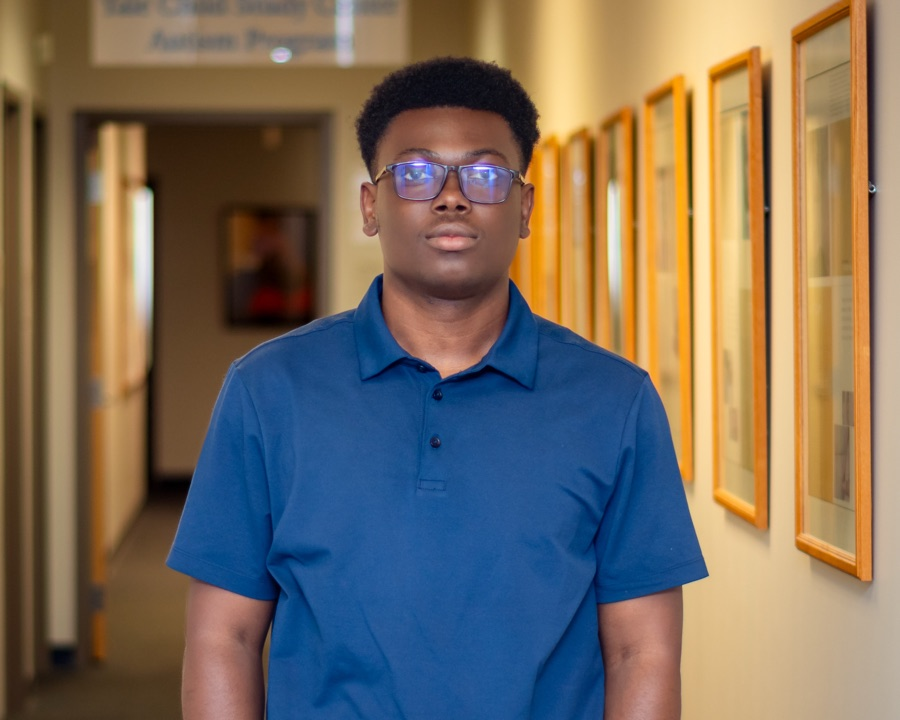

Functional Encoding Units for Neural Population Dynamics
Building FEU-pipeline, a state-space unsupervised method for linking single-neuron activity to population-level dynamics across electrophysiology and calcium imaging datasets.

Postgraduate Research Associate at Yale University
Incoming PhD Student in Biomedical Engineering at Washington University in St. Louis, Fall 2026
Broad Interests: Neuroengineering and Computational Neuroscience
cyril [dot] akafia [at] yale [dot] edu
Updated CV is available on request.
I am a postgraduate research associate working in the AZA Lab at Yale University, advised by AZA Allsop, MD, PhD. Prior to my current research position, I obtained a B.Sc in Biomedical Engineering at the University of Ghana, where I was fortunate to be advised by Prof. Samuel K Kwofie. My research interests are in neuroengineering and computational neuroscience, and I will be joining the Chen Ultrasound Lab at Washington University in St. Louis as a PhD student in Biomedical Engineering, where I will work on closed-loop neuromodulation and focused ultrasound. I am committed to mentorship, particularly for students from underrepresented backgrounds in STEM, and am an organizer of the NeuroAI workshop at the Deep Learning Indaba.
Building FEU-pipeline, a state-space unsupervised method for linking single-neuron activity to population-level dynamics across electrophysiology and calcium imaging datasets.
Developing toward PhD work on mechanistic understanding of ultrasound neuromodulation and closed-loop neural interfaces for neurological conditions.
Analyzing EEG, heart-rate, eye-tracking, and psychometric data to study how music and mindfulness interventions shift neural, cardiac, and psychological state.
Applying machine learning to biomedical problems including anti-inflammatory compound screening with AICpred and clinical imaging models for radiology support.
Most recent publications on Google Scholar.
* indicates equal contribution.
Music Mindfulness Acutely Enhances Autonomic Activity and Psychological State in Anxiety and Depression
C. Ramirez*, G. A. Alayine*, C. S. K. Akafia*, ... A. S. Allsop
Frontiers in Neuroscience. 2025; 19
AICpred: Machine Learning-Based Prediction of Potential Anti-Inflammatory Compounds Targeting TLR4-MyD88 Binding Mechanism
L. Fry-Nartey, C. S. K. Akafia, ... S. K. Kwofie
Information. 2025; 16:34
An unbiased method to partition diverse neuronal responses into functional ensembles reveals interpretable population dynamics during innate social behavior
Alexander Lin*, Cyril Selase Kwaku Akafia*, Olga Dal Monte, Siqi Fan, Nicholas Fagan, Philip Putnam, Kay M. Tye, Steve Chang, Demba Ba, and AZA Stephen Allsop
Preprint
Music Mindfulness Acutely Enhances Autonomic Activity and Psychological State in Anxiety and Depression
C. Ramirez*, G. A. Alayine*, C. S. K. Akafia*, ... A. S. Allsop
Frontiers in Neuroscience. 2025; 19
AICpred: Machine Learning-Based Prediction of Potential Anti-Inflammatory Compounds Targeting TLR4-MyD88 Binding Mechanism
L. Fry-Nartey, C. S. K. Akafia, ... S. K. Kwofie
Information. 2025; 16:34
Organoids, Biocybersecurity, and Cyberbiosecurity: A Light Exploration
Xavier Palmer*, Cyril Selase Kwaku Akafia*, Eleasa Woodson, Amanda Woodson, and Lucas Potter
Organoids 2024, 3, 83-112
An unbiased method to partition diverse neuronal responses into functional ensembles reveals interpretable population dynamics during innate social behavior
Alexander Lin*, Cyril Selase Kwaku Akafia*, Olga Dal Monte, Siqi Fan, Nicholas Fagan, Philip Putnam, Kay M. Tye, Steve Chang, Demba Ba, and AZA Stephen Allsop
Preprint
Updated CV is available on request.